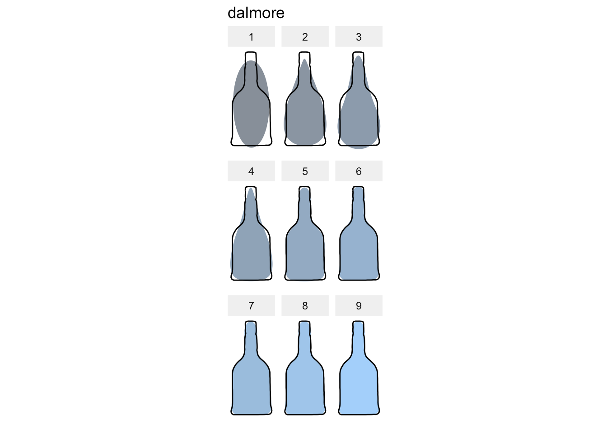
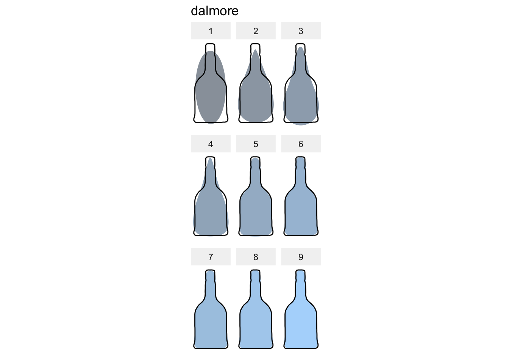
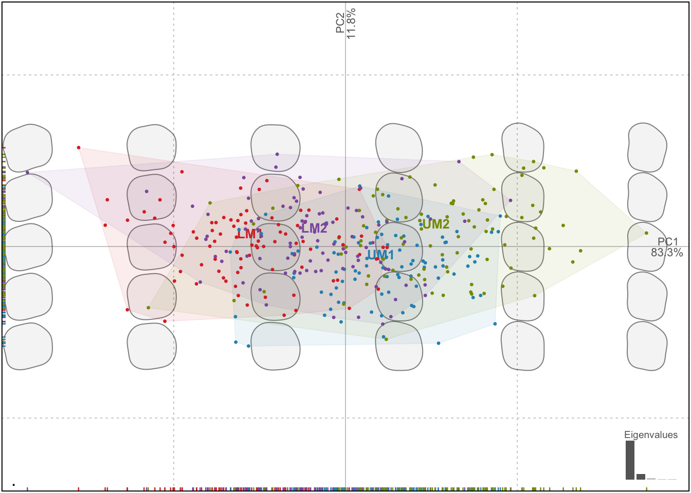
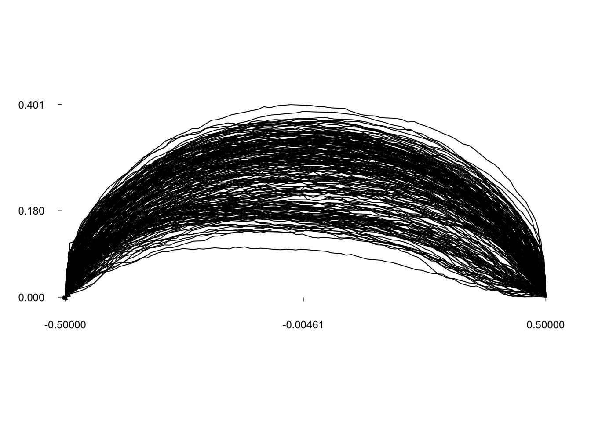
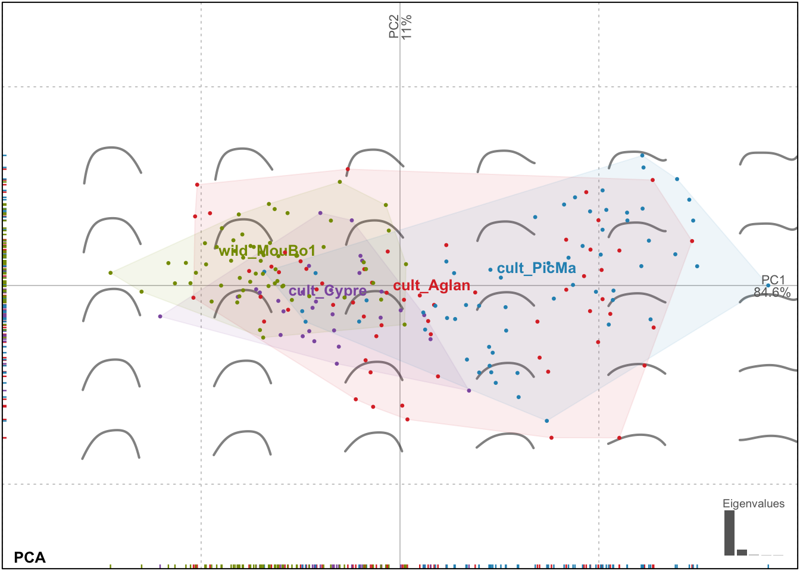
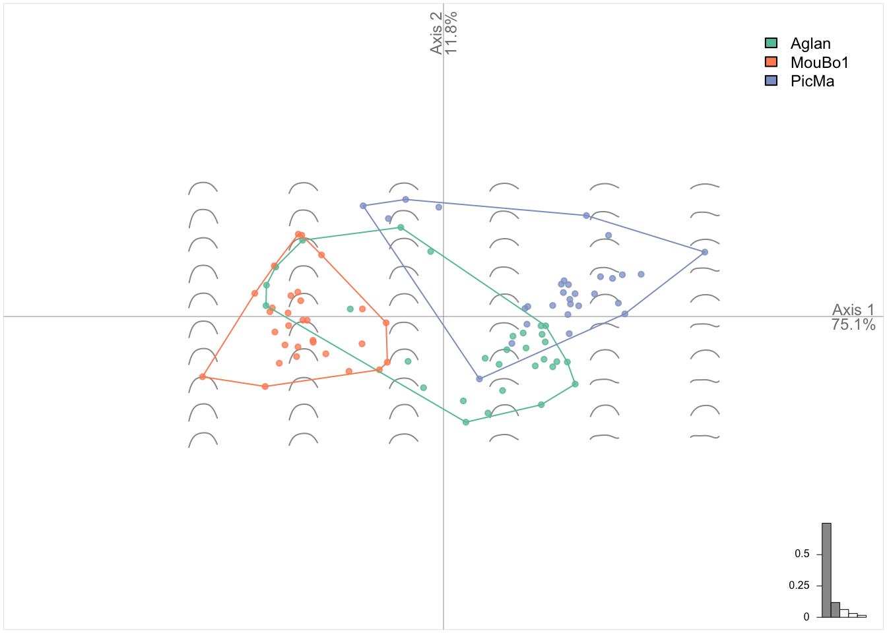
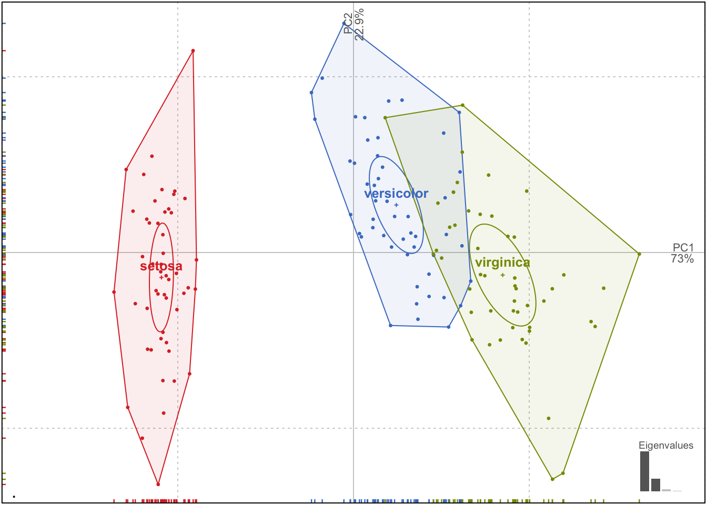
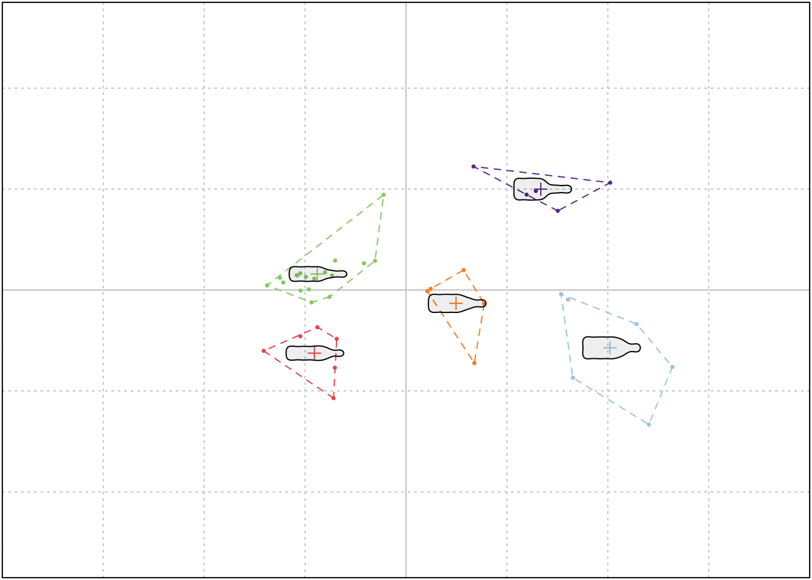

Momocs speed dating
Vincent Bonhomme
2018-04-09
Note that this vignette is, as well as Momocs, being entirely rewritten this day. As per request, I put it back in the package but things may evolve on a weekly basis until Momocs 2.0
Preliminaries
Abstract
Momocs aims to provide a complete and convenient toolkit for morphometrics. It is intended for scientists interested in describing quantitatively the shape, and its (co)variations, of the objects they study.
In the last decade, R has become the open-source lingua franca for statistics, and morphometrics known its so-called “revolution”. Nevertheless, morphometric analyses still have to be carried out using various software packages either dedicated to a particular morphometric and/or for which source code is mostly unavailable and/or copyrighted. Moreover, most of existing software packages cannot be extended and their bugs are hard to detect and thus correct. This situation is detrimental to morphometrics: time is wasted, analyses are restricted to available methods, and last but not least, are poorly reproducible. This impedes collaborative effort both in software development and in morphometric studies.
By gathering the common morphometric approaches in an open-source environment and welcoming contributions, Momocs is an attempt to solve this twofold problem.
Momocs hinges on the core functions published in the must-have Morphometrics with R by Julien Claude (2008), but has been further extended to allow other shape description systems. So far, configurations of landmarks, outlines and open outline analyses, along with some facilities for traditional morphometrics are implemented.
Prior to analysis, Momocs can be used to acquire and manipulate data or to import/export from/to other formats. Momocs also has the facility for a wide range of multivariate analyses and production of the companion graphics. Thus a researcher will find that just a few lines of code will provide initial results, but the methods implemented can be finely tuned and extended according to the user’s needs.
- If you use it, cite it:
citation("Momocs"). - This citation refers to an obsolete version of Momocs, only handling outline analyses. The next companion and seminal paper is submitted.
Survival tips
- This vignette introduces Momocs; more specific help can be find in function’s help files, for instance
?efourier. - There is a much nicer online version of this manual that can be accessed from the console with, e.g.
Momocs_help("efourier"). - Feel free to contribute to Momocs through GitHub: report issues, ask for new features, share data and methods, correct typos, write better vignettes, helpfiles, or whatever pleases you. If you have never heard of GitHub, that’s definitely worth a look.
- Feel free to drop me a line, should you need a hand or would like to collaborate with me:
bonhomme.vincent@gmail.com.
Get, install and use it
First, of all, let’s download the last version of Momocs. You will need to install the devtools package to get it from my GitHub repository :
install.packages("devtools")
devtools::install_github("MomX/Momocs")The typical install_packages("Momocs") will get you the last CRAN version of Momocs, but the GitHub version is preferred as Momocs is still under active development.
We can start using Momocs, as long as it has been loaded using:
library(Momocs)Design
Keywords used all accross Momocs are introduced here in bold.
Morphometrics is the ugly job of turning beautiful shapes into quantitative variables. Just kidding, that’s pretty exciting.
A shape is defined as a collection of (x; y) coordinates. No 3D yet but different families can be handled: outlines, here in a first-quarter moon ; open outlines, here is the sterile valve of an olive stone; configuration of landmarks; here, hologous points from a mosquito wing.
They are all single shapes defined by a matrix of (x; y) coordinates; here are the first points of the moon:
shapes[18] %>% head()## [,1] [,2]
## [1,] 200 50
## [2,] 199 49
## [3,] 198 49
## [4,] 197 50
## [5,] 196 50
## [6,] 195 49A few dozens of operations on single shapes are implemented such as: plotting, centering, calculating areas, etc. These 70+ operations can be accessed with apropos("coo_"). But working on single shapes is quite boring.
Shapes can be organized into a collection of coordinates: a Coo object that carries:
- a component named
$coo, alistof shapes (asmatrix.ces); - most of the time, a component named
$fac, adata.frameto store covariates, eitherfactors ornumerics; - possibly, other components of interest.
One can do several things with a Coo object: visualize it, apply morphometric operations, handle the data it contains, but in the end, a __ morphometric method__ will turn coordinates into coefficients.
Such morphometric operation on coordinates produce a collection of coefficients: a Coe object that carries:
- a component named
$coe, amatrixof coefficients; - if present in
Coo,$facis inherited; - possibly, other components of interest.
This can be summarized as follows:
Coo |
+ | Morphometric method | = | Coe |
|---|---|---|---|---|
(x; y) coordinates |
+ | appropriate method | = | quantitative variables |
Coo objects are collections of coordinates that become Coe objects when an appropriate morphometric method is applied on them.
Some operations on Coo/Coe are generic in that they do not depend of the nature of the shape. For instance, centering a configuration of landmarks or an outline, or calculating their centroid size is, mathematically, the same generic operation. But some operations on shapes are specific to a peculiar family. For instance, calculating elliptical Fourier transforms on a configuration of landmarks would make no sense.
Momocs implement this desirable behavior and defines classes and subclasses, as S3 objects.
Coo |
Morphometrics methods | Coe |
|---|---|---|
OutCoo (outlines) |
efourier, rfourier, sfourier, tfourier
|
OutCoe |
OpnCoo (open outlines) |
npoly, opoly, dfourier
|
OpnCoe |
LdkCoo (configuration of landmarks) |
fgProcrustes, slide
|
LdkCoe |
In other words:
- any collection of shapes belongs to (pick one)
{OutCoo, OpnCoo, LdkCoo}and is also aCooobject; - generic and specific methods can be applied to it
- a collection of coefficients is obtain and belongs to (pick one)
{OutCoe, OpnCoe, LdkCoe}and is also aCoeobject.
Finally, generic and specific operations can be applied to the Coe objects, chiefly multivariate methods, capitalicized: PCA, LDA, CLUST, MANOVA(and MANCOVA), MSHAPES, KMEANS, etc.
Overall, Momocs implements a simple and consistent grammar that is detailed below. Also, if you’re familiar with modern R and the Hadley-verse, you should feel home as ggplot2 graphics, dplyr verbs and magrittr pipes are implemented.
Single shapes
Let’s load one of the Momocs datasets, some various outlines (an Out object):
shapes # prints a brief summary
panel(shapes, names=TRUE) # base graphics
## Out (outlines)
## - 30 outlines, 836 +/- 255 coords (in $coo)
## - 0 classifiers (in $fac):
## # A tibble: 0 x 0
## - also: $ldkshapes is one of the datasets bundled with Momocs. It’s (“lazy”) loaded in memory as soon as you call it, no need for data(shapes). To see all Momocs’ datasets, try data(package="Momocs"). These datasets are all Coo objects (try class(bot)), ie collection of shapes.
One can do many things on a Coo object, as above, e.g. printing a summary of it (just by typing its name in the console), plotting a family picture with panel or panel2. Note the 2 that refers to a ggplot2 variant of a given plot.
So far, we’re interested in single shapes so let’s extract the 4th shape from shapes, using the traditional syntax. We plot it with coo_plot that comes with several options for plotting all families of shapes.
shp <- shapes[4]
coo_plot(shp)# coo_plot is the base plotter for shapes
# but it can be finely customized, see ?coo_plot
coo_plot(shp, col="grey80", border=NA, centroid=FALSE, main="Meow")
Let’s now do some basic operations on this shape. They all named coo_* and you can have the full list with apropos("coo_"). coo_* family encompasses:
- geometric operations (such as centering, scaling, etc.)
- plotting functions
- scalar descriptors of shape (such as area, perimeter, circularity, rectilinearity, etc.)
- various other operations on a single shape.
coo_plot(coo_center(shp), main="centered Meow")
coo_plot(coo_sample(shp, 64), points=TRUE, pch=20, main="64-pts Meow")
Momocs makes use of maggritr’s pipe operators. A nice introduction can be found there. magrittr requires a (very small) cerebral gymnastics at the beginning but the benefits are huge, for defining moprhometric pipelines in Momocs but also for R as a whole. It makes things clearer, it: saves typing; reduces intermediate variable assignation; reads from left to right; substantiates the pipe we (should) have in mind. magrittr’s pipes are already loaded with Momocs.
shapes[4] %>% coo_smooth(5) %>% coo_sample(64) %>% coo_scale() %>% coo_plot()
# pipes can be turned into custom function
cs64 <- function(x) x %>% coo_sample(64) %>% coo_scale() %>% coo_center()
shapes[4] %>% cs64 %>% coo_plot() # note the axes
The most familiar operation can directly be applied on Coo objects:
bot %>%
coo_center %>% coo_scale %>%
coo_alignxax() %>% coo_slidedirection("up") %T>%
print() %>% stack()## Out (outlines)
## - 40 outlines, 162 +/- 21 coords (in $coo)
## - 2 classifiers (in $fac):
## # A tibble: 40 x 2
## type fake
## <fct> <fct>
## 1 whisky a
## 2 whisky a
## 3 whisky a
## 4 whisky a
## 5 whisky a
## 6 whisky a
## # ... with 34 more rows
## - also: $ldkMorphometrics
Outline analysis
A word about data import: you can extract outlines from a list of black masks over a white background, as .jpg images with import_jpg. Have a look to helpfiles (import_jpg and import_jpg1) for more details. Here we do not bother with import since we will use the bottles outlines dataset bundled with Momocs.
data(bot)
bot
panel(bot, fac="type", names=TRUE)stack(bot)## Out (outlines)
## - 40 outlines, 162 +/- 21 coords (in $coo)
## - 2 classifiers (in $fac):
## # A tibble: 40 x 2
## type fake
## <fct> <fct>
## 1 whisky a
## 2 whisky a
## 3 whisky a
## 4 whisky a
## 5 whisky a
## 6 whisky a
## # ... with 34 more rows
## - also: $ldkHere we will illustrate outline analysis with some elliptical Fourier transforms (but the less used - and tested - radii variation Fourier transforms, its variant used by Renaud et al., and tangent angle Fourier transforms are also implemented with rfourier, sfourier and tfourier respectively).
The idea behind elliptical Fourier transforms is to fit the x and y coordinates separately, that is the blue and red curves below:
coo_oscillo(bot[1], "efourier")
## # A tibble: 138 x 2
## dx dy
## <dbl> <dbl>
## 1 0. 0.
## 2 3. -21.
## 3 3. -32.
## 4 6. -53.
## 5 9. -74.
## 6 11. -84.
## 7 15. -105.
## 8 17. -126.
## 9 20. -147.
## 10 22. -158.
## # ... with 128 more rowsGraphically, this is equivalent to fitting Ptolemaic ellipses on the plane:
Ptolemy(bot[1])
Let’s calibrate the number of harmonics required. More details can be found in their respective help files.

 

## $gg
##
## $q
## h1 h2 h3 h4 h5 h6
## brahma 12.015183 75.77538 84.07922 96.10181 97.34168 98.77976
## caney 25.287301 83.68491 85.38833 97.47106 97.79524 98.32091
## chimay 43.421561 81.54716 86.94665 94.96776 97.39247 98.02442
## corona 18.705505 84.76069 86.29248 96.75231 97.17090 97.83694
## deusventrue 49.960794 89.62993 91.50776 97.37525 98.13378 98.78278
## duvel 43.733170 79.77505 88.14345 93.10172 96.38315 96.68583
## franziskaner 19.307641 80.48552 86.97152 95.60206 96.27931 98.23548
## grimbergen 38.816119 85.20063 87.51264 96.99263 97.57349 97.77877
## guiness 33.238446 80.80898 85.81759 96.51499 97.51998 97.97861
## hoegardeen 25.800395 83.96335 85.84893 97.06527 97.52610 98.40888
## jupiler 24.312112 84.66358 86.03794 97.54700 97.85975 98.70747
## kingfisher 26.135594 84.48777 88.04188 97.17552 97.65600 98.55744
## latrappe 40.006966 67.94796 83.40047 87.90448 94.38216 96.89498
## lindemanskriek 33.668625 84.76379 87.14975 97.23196 97.82567 98.57729
## nicechouffe 38.595506 84.52704 88.31686 96.60627 97.58948 98.32637
## pecheresse 25.817934 84.80965 85.96765 97.04553 97.40322 98.61866
## sierranevada 32.359763 80.66498 86.63786 95.67303 97.22522 97.73540
## tanglefoot 44.144525 75.09545 85.23159 93.76784 96.84021 97.85135
## tauro 24.638135 84.88122 86.17237 97.58843 97.87680 98.73115
## westmalle 26.559319 84.52893 86.38685 96.87098 97.35465 98.65747
## amrut 25.559647 78.32103 83.94673 95.64072 96.52872 97.78039
## ballantines 29.835518 60.96305 83.41052 85.23844 91.95976 93.61191
## bushmills 6.275178 70.46102 82.38351 88.07200 91.04770 94.39188
## chivas 50.407833 81.48772 87.52331 96.55344 97.37883 97.53340
## dalmore 61.130880 79.96678 88.67289 96.22714 97.97682 98.23593
## famousgrouse 20.254164 74.09413 84.59829 93.32387 95.00350 97.87492
## glendronach 24.283297 78.01075 83.60628 95.69481 96.49098 97.67259
## glenmorangie 25.174627 74.67603 80.26797 95.31801 96.15812 98.17947
## highlandpark 30.650892 64.59229 80.58407 87.31869 92.89584 96.53460
## jackdaniels 32.167532 77.27019 83.98360 94.84082 96.62995 97.58573
## jb 28.090999 78.70290 83.65818 95.95055 96.68674 97.35981
## johnniewalker 14.334818 70.90124 83.04662 89.84837 91.85425 96.43178
## magallan 13.369287 71.36417 80.20244 93.20149 94.18488 98.63628
## makersmark 46.604041 85.49398 89.71249 97.23672 97.66333 97.66690
## oban 25.431707 77.83107 82.71750 95.88543 96.59064 97.73377
## oldpotrero 56.238626 88.45486 91.39008 97.95170 98.43647 98.44377
## redbreast 52.375446 82.51750 88.28618 96.97053 97.61586 97.76857
## tamdhu 20.682047 76.19007 81.64790 95.24572 96.18858 97.95112
## wildturkey 34.233782 75.78416 82.54975 95.65258 96.85279 97.66148
## yoichi 26.217978 66.92082 79.80949 88.49538 92.83553 97.35722
## h7 h8 h9 h10 h11 h12
## brahma 98.93834 98.96885 99.35135 99.49083 99.78892 99.83907
## caney 98.58170 98.93137 99.66487 99.76105 99.83464 99.83984
## chimay 98.84439 98.90095 99.68603 99.70994 99.75952 99.76441
## corona 98.18097 98.99520 99.49044 99.56051 99.63586 99.64366
## deusventrue 99.43345 99.48470 99.74104 99.74521 99.88867 99.88932
## duvel 98.45994 98.63711 99.66225 99.68683 99.73484 99.80925
## franziskaner 98.66182 98.93920 99.37315 99.44664 99.73243 99.74755
## grimbergen 98.37062 98.76975 99.70911 99.78080 99.79771 99.81567
## guiness 98.35037 98.36662 99.44825 99.59655 99.80284 99.80681
## hoegardeen 98.75081 99.09224 99.51903 99.59162 99.77548 99.79636
## jupiler 98.99411 99.33156 99.71026 99.75434 99.88047 99.89240
## kingfisher 98.88940 99.15843 99.51806 99.56392 99.74486 99.77429
## latrappe 99.16748 99.31723 99.59669 99.61555 99.69219 99.74053
## lindemanskriek 99.04016 99.22543 99.60968 99.61839 99.85332 99.86514
## nicechouffe 99.00682 99.12873 99.60201 99.61001 99.85551 99.86228
## pecheresse 99.00885 99.37037 99.68087 99.71826 99.88329 99.89623
## sierranevada 98.21142 98.22338 99.32287 99.52992 99.83491 99.84351
## tanglefoot 98.23226 98.32455 99.16811 99.30599 99.69542 99.70261
## tauro 99.00773 99.33870 99.70904 99.74972 99.87046 99.88265
## westmalle 99.08123 99.40464 99.64370 99.64988 99.78594 99.79494
## amrut 98.21574 98.23525 98.95793 99.26041 99.76412 99.79776
## ballantines 98.37535 99.05510 99.58352 99.62876 99.63775 99.69544
## bushmills 96.39559 98.10980 99.27995 99.46343 99.59144 99.73298
## chivas 98.27691 98.49702 99.73432 99.75594 99.79557 99.82221
## dalmore 98.74891 98.83402 99.56825 99.64969 99.73304 99.83380
## famousgrouse 98.37369 98.39547 98.80247 98.82414 99.53318 99.60669
## glendronach 98.07677 98.09667 98.84364 99.22981 99.75547 99.78792
## glenmorangie 98.56749 98.62995 99.14052 99.19841 99.68853 99.70351
## highlandpark 98.58425 98.91184 98.96625 99.09444 99.36492 99.57817
## jackdaniels 97.96643 98.00015 98.85683 99.10608 99.76384 99.81473
## jb 97.88849 97.90482 98.88380 99.28781 99.67140 99.76931
## johnniewalker 98.10439 98.90945 99.27686 99.34737 99.55178 99.55770
## magallan 98.69120 98.78238 99.00320 99.12456 99.52406 99.62456
## makersmark 98.97988 99.46612 99.68040 99.74369 99.79648 99.81828
## oban 98.20060 98.26030 98.94173 99.35375 99.76311 99.79074
## oldpotrero 99.35782 99.46957 99.76279 99.76400 99.88371 99.90242
## redbreast 98.46627 98.64025 99.75810 99.79416 99.84011 99.86920
## tamdhu 98.28202 98.28570 98.82264 99.06467 99.74465 99.77447
## wildturkey 98.18703 98.20022 99.19434 99.33499 99.68401 99.75038
## yoichi 98.69958 99.04137 99.12485 99.22615 99.52969 99.57055
## h13 h14 h15 h16 h17 h18
## brahma 99.89334 99.90228 99.92438 99.93392 99.94305 99.94815
## caney 99.91300 99.92991 99.93952 99.94303 99.94993 99.95194
## chimay 99.79780 99.82192 99.87449 99.87713 99.88818 99.89764
## corona 99.84697 99.87146 99.91108 99.91738 99.92566 99.92689
## deusventrue 99.93108 99.93449 99.94456 99.95016 99.95601 99.96269
## duvel 99.85724 99.91081 99.92214 99.93122 99.93620 99.94179
## franziskaner 99.85385 99.86304 99.90329 99.90716 99.91978 99.92423
## grimbergen 99.83514 99.85438 99.88190 99.88569 99.89992 99.90247
## guiness 99.82500 99.86587 99.88936 99.90329 99.92157 99.92316
## hoegardeen 99.88952 99.89441 99.91226 99.91365 99.92320 99.92380
## jupiler 99.95425 99.95666 99.96259 99.96330 99.96568 99.96621
## kingfisher 99.88666 99.89972 99.93141 99.93417 99.94411 99.94992
## latrappe 99.79188 99.80657 99.85719 99.87227 99.89659 99.92557
## lindemanskriek 99.93206 99.93307 99.94728 99.95686 99.96300 99.96480
## nicechouffe 99.93681 99.94568 99.95852 99.96538 99.96788 99.97204
## pecheresse 99.93207 99.93876 99.94317 99.94826 99.95274 99.95534
## sierranevada 99.85162 99.87017 99.88954 99.90430 99.93555 99.93935
## tanglefoot 99.77601 99.80763 99.83545 99.85607 99.88003 99.89716
## tauro 99.94771 99.94963 99.95414 99.95456 99.95686 99.95726
## westmalle 99.91248 99.91546 99.92866 99.93556 99.93992 99.94092
## amrut 99.80847 99.83077 99.87500 99.90215 99.93188 99.94105
## ballantines 99.73486 99.82345 99.84452 99.85982 99.87760 99.90773
## bushmills 99.76233 99.78135 99.82564 99.84973 99.87725 99.89756
## chivas 99.82889 99.86325 99.88374 99.93583 99.94196 99.94632
## dalmore 99.84596 99.89710 99.90085 99.92177 99.93113 99.95101
## famousgrouse 99.75558 99.79026 99.80261 99.81449 99.81696 99.85928
## glendronach 99.79455 99.82900 99.86438 99.88246 99.91374 99.92210
## glenmorangie 99.86390 99.86457 99.90075 99.90508 99.91028 99.93101
## highlandpark 99.72174 99.76571 99.88672 99.89054 99.92775 99.92833
## jackdaniels 99.82818 99.84665 99.85012 99.86994 99.90744 99.91330
## jb 99.78217 99.78413 99.86182 99.89958 99.92360 99.92866
## johnniewalker 99.75291 99.75819 99.79936 99.80181 99.83037 99.83962
## magallan 99.80739 99.81897 99.83110 99.84203 99.88210 99.90377
## makersmark 99.88175 99.88608 99.90279 99.90528 99.91975 99.92347
## oban 99.81862 99.82757 99.91184 99.91953 99.95028 99.95075
## oldpotrero 99.91354 99.93543 99.94084 99.95120 99.95568 99.96102
## redbreast 99.87192 99.91377 99.93035 99.95876 99.96089 99.96404
## tamdhu 99.83549 99.85035 99.88252 99.89613 99.91034 99.93325
## wildturkey 99.77506 99.79678 99.84515 99.87528 99.90548 99.92326
## yoichi 99.77068 99.79424 99.87221 99.87420 99.91975 99.92197
## h19 h20 h21 h22 h23 h24
## brahma 99.95550 99.95746 99.96417 99.96677 99.97405 99.97863
## caney 99.95622 99.95888 99.97058 99.97227 99.98302 99.98394
## chimay 99.90339 99.91261 99.91529 99.92077 99.92140 99.93824
## corona 99.93706 99.93981 99.95067 99.95162 99.95776 99.96247
## deusventrue 99.96545 99.97365 99.97462 99.97704 99.97718 99.97991
## duvel 99.94319 99.95228 99.95287 99.96245 99.96949 99.97649
## franziskaner 99.93771 99.93920 99.95090 99.95233 99.95949 99.96093
## grimbergen 99.91177 99.91870 99.92329 99.92642 99.93039 99.93874
## guiness 99.93028 99.93387 99.94447 99.95388 99.95922 99.96937
## hoegardeen 99.93408 99.93568 99.94680 99.94756 99.95623 99.95734
## jupiler 99.96928 99.97023 99.97507 99.97576 99.97920 99.97962
## kingfisher 99.95510 99.95766 99.96278 99.96390 99.96758 99.96972
## latrappe 99.93089 99.95401 99.95645 99.96952 99.97292 99.97417
## lindemanskriek 99.97193 99.97255 99.97839 99.97931 99.98097 99.98256
## nicechouffe 99.97455 99.97531 99.97759 99.97826 99.97912 99.98143
## pecheresse 99.96159 99.96453 99.96964 99.97077 99.97388 99.97452
## sierranevada 99.95145 99.95307 99.95565 99.96277 99.96395 99.97039
## tanglefoot 99.89968 99.91328 99.91384 99.92615 99.92758 99.93445
## tauro 99.96042 99.96072 99.96661 99.96707 99.96969 99.97010
## westmalle 99.94628 99.95066 99.95767 99.95913 99.96618 99.96844
## amrut 99.94808 99.95625 99.95838 99.96220 99.96596 99.97068
## ballantines 99.91687 99.93774 99.94053 99.95274 99.95383 99.95853
## bushmills 99.92330 99.93301 99.94578 99.95250 99.95731 99.95771
## chivas 99.94823 99.95561 99.96383 99.97171 99.97307 99.97989
## dalmore 99.95618 99.96249 99.96524 99.96734 99.97189 99.97401
## famousgrouse 99.88900 99.93989 99.95562 99.96013 99.96372 99.96656
## glendronach 99.93080 99.94133 99.94610 99.95415 99.96120 99.96728
## glenmorangie 99.94290 99.95245 99.96035 99.96303 99.96701 99.96979
## highlandpark 99.93284 99.94085 99.94446 99.95644 99.96174 99.96878
## jackdaniels 99.93655 99.93666 99.93968 99.94236 99.94739 99.95498
## jb 99.93439 99.94268 99.95065 99.95835 99.96984 99.97174
## johnniewalker 99.86652 99.89551 99.91658 99.92373 99.93990 99.94002
## magallan 99.94684 99.96455 99.97154 99.97366 99.97655 99.97846
## makersmark 99.93210 99.93672 99.94619 99.94881 99.95083 99.95386
## oban 99.95472 99.95973 99.96159 99.97085 99.97707 99.98017
## oldpotrero 99.96251 99.96731 99.96939 99.97243 99.97489 99.97738
## redbreast 99.96489 99.97017 99.97469 99.97920 99.98006 99.98166
## tamdhu 99.94688 99.94822 99.96482 99.96574 99.97015 99.97341
## wildturkey 99.93224 99.94463 99.94912 99.95786 99.96255 99.96783
## yoichi 99.93503 99.94107 99.94648 99.95962 99.96316 99.97278
## h25 h26 h27 h28 h29 h30
## brahma 99.98207 99.98379 99.98470 99.98618 99.98743 99.98885
## caney 99.98473 99.98624 99.98691 99.98869 99.98887 99.98899
## chimay 99.94817 99.95669 99.96457 99.96589 99.97046 99.97151
## corona 99.96717 99.97029 99.97139 99.97479 99.97561 99.97830
## deusventrue 99.98110 99.98466 99.98563 99.98701 99.98718 99.98989
## duvel 99.97868 99.97960 99.98197 99.98235 99.98308 99.98400
## franziskaner 99.96447 99.96642 99.96808 99.96960 99.97048 99.97204
## grimbergen 99.94477 99.95715 99.96154 99.96854 99.97316 99.97565
## guiness 99.97113 99.97550 99.97634 99.97809 99.97878 99.97917
## hoegardeen 99.96016 99.96230 99.96538 99.96926 99.97232 99.97740
## jupiler 99.98138 99.98228 99.98382 99.98570 99.98742 99.98940
## kingfisher 99.97328 99.97507 99.97779 99.98092 99.98257 99.98596
## latrappe 99.97791 99.98003 99.98221 99.98465 99.98616 99.98784
## lindemanskriek 99.98323 99.98523 99.98548 99.98739 99.98797 99.98873
## nicechouffe 99.98186 99.98423 99.98498 99.98594 99.98744 99.98800
## pecheresse 99.97665 99.97827 99.98057 99.98508 99.98655 99.98861
## sierranevada 99.97193 99.97805 99.97818 99.98123 99.98179 99.98365
## tanglefoot 99.93571 99.93984 99.94207 99.94566 99.95188 99.95741
## tauro 99.97194 99.97267 99.97522 99.97828 99.98070 99.98243
## westmalle 99.96859 99.97066 99.97233 99.97904 99.98038 99.98504
## amrut 99.97152 99.97223 99.97503 99.97809 99.97968 99.98394
## ballantines 99.96081 99.96165 99.96382 99.96541 99.97039 99.97149
## bushmills 99.96711 99.97060 99.97825 99.98295 99.98455 99.98585
## chivas 99.98253 99.98375 99.98928 99.98944 99.99277 99.99283
## dalmore 99.97774 99.97781 99.98061 99.98367 99.98534 99.99122
## famousgrouse 99.97346 99.97623 99.97703 99.98009 99.98029 99.98157
## glendronach 99.96972 99.97301 99.98048 99.98455 99.98571 99.98849
## glenmorangie 99.97099 99.97511 99.97882 99.98260 99.98313 99.98525
## highlandpark 99.97404 99.98360 99.98974 99.99045 99.99142 99.99191
## jackdaniels 99.96002 99.96592 99.96796 99.97243 99.97285 99.98266
## jb 99.97436 99.97728 99.97932 99.98125 99.98275 99.98386
## johnniewalker 99.94513 99.94924 99.95376 99.96379 99.96743 99.97928
## magallan 99.97873 99.97982 99.98225 99.98373 99.98606 99.98627
## makersmark 99.95461 99.96330 99.96906 99.97447 99.97682 99.97804
## oban 99.98384 99.98406 99.98506 99.98631 99.98733 99.98999
## oldpotrero 99.97959 99.98149 99.98509 99.98606 99.98781 99.98843
## redbreast 99.98262 99.98289 99.98476 99.98500 99.98921 99.98999
## tamdhu 99.97517 99.98004 99.98048 99.98480 99.98664 99.98887
## wildturkey 99.97109 99.97606 99.97667 99.97997 99.98133 99.98239
## yoichi 99.97394 99.98560 99.98628 99.98973 99.99048 99.99137
## h31 h32 h33 h34 h35 h36
## brahma 99.99025 99.99138 99.99249 99.99322 99.99350 99.99410
## caney 99.98914 99.98989 99.99002 99.99074 99.99094 99.99129
## chimay 99.97158 99.97366 99.97544 99.97993 99.98277 99.98620
## corona 99.97887 99.98209 99.98243 99.98382 99.98384 99.98593
## deusventrue 99.99085 99.99211 99.99368 99.99432 99.99473 99.99498
## duvel 99.98507 99.98783 99.99024 99.99294 99.99404 99.99429
## franziskaner 99.97282 99.97480 99.97599 99.97971 99.98128 99.98305
## grimbergen 99.97627 99.97634 99.97664 99.97907 99.98086 99.98373
## guiness 99.97963 99.98072 99.98161 99.98219 99.98261 99.98428
## hoegardeen 99.97864 99.98205 99.98269 99.98424 99.98484 99.98502
## jupiler 99.99025 99.99164 99.99193 99.99219 99.99222 99.99258
## kingfisher 99.98646 99.98755 99.98791 99.98835 99.98860 99.98898
## latrappe 99.98941 99.98972 99.99033 99.99156 99.99172 99.99277
## lindemanskriek 99.98917 99.98967 99.99056 99.99156 99.99218 99.99278
## nicechouffe 99.98900 99.98955 99.99087 99.99115 99.99182 99.99280
## pecheresse 99.98995 99.99004 99.99059 99.99077 99.99095 99.99207
## sierranevada 99.98535 99.98574 99.98595 99.98691 99.98765 99.98785
## tanglefoot 99.96290 99.96650 99.97222 99.97359 99.97595 99.97642
## tauro 99.98342 99.98717 99.98776 99.98792 99.98850 99.98890
## westmalle 99.98561 99.98714 99.98754 99.98957 99.99085 99.99101
## amrut 99.98560 99.98918 99.98937 99.98972 99.99092 99.99148
## ballantines 99.97652 99.97809 99.98278 99.98370 99.98449 99.98557
## bushmills 99.98635 99.98808 99.98868 99.98979 99.99027 99.99114
## chivas 99.99384 99.99410 99.99428 99.99508 99.99529 99.99649
## dalmore 99.99354 99.99561 99.99580 99.99624 99.99644 99.99655
## famousgrouse 99.98338 99.98440 99.98510 99.98683 99.98851 99.98995
## glendronach 99.98887 99.99075 99.99115 99.99210 99.99255 99.99373
## glenmorangie 99.98596 99.98661 99.98814 99.98925 99.98991 99.99078
## highlandpark 99.99262 99.99289 99.99351 99.99389 99.99484 99.99517
## jackdaniels 99.98413 99.98639 99.98680 99.98744 99.98796 99.98913
## jb 99.98463 99.98538 99.98634 99.98750 99.98804 99.98950
## johnniewalker 99.98157 99.98330 99.98378 99.98421 99.98543 99.98563
## magallan 99.98766 99.98830 99.98876 99.98958 99.99092 99.99139
## makersmark 99.97922 99.98341 99.98435 99.98587 99.98684 99.98770
## oban 99.99086 99.99456 99.99468 99.99603 99.99656 99.99736
## oldpotrero 99.99285 99.99378 99.99411 99.99556 99.99570 99.99614
## redbreast 99.99327 99.99361 99.99438 99.99586 99.99592 99.99669
## tamdhu 99.98962 99.98990 99.99035 99.99048 99.99151 99.99234
## wildturkey 99.98442 99.98507 99.99014 99.99131 99.99211 99.99362
## yoichi 99.99406 99.99443 99.99528 99.99556 99.99581 99.99613
## h37 h38 h39 h40 h41 h42
## brahma 99.99434 99.99447 99.99475 99.99490 99.99504 99.99523
## caney 99.99147 99.99225 99.99230 99.99266 99.99277 99.99310
## chimay 99.99243 99.99280 99.99333 99.99424 99.99447 99.99517
## corona 99.98614 99.98752 99.98833 99.98963 99.99150 99.99262
## deusventrue 99.99505 99.99532 99.99558 99.99566 99.99573 99.99596
## duvel 99.99438 99.99530 99.99640 99.99756 99.99796 99.99816
## franziskaner 99.98523 99.98718 99.98921 99.99026 99.99113 99.99163
## grimbergen 99.98571 99.98836 99.99109 99.99185 99.99255 99.99327
## guiness 99.98568 99.98756 99.98867 99.98882 99.98950 99.98972
## hoegardeen 99.98544 99.98601 99.98673 99.98958 99.99093 99.99248
## jupiler 99.99295 99.99372 99.99404 99.99543 99.99576 99.99636
## kingfisher 99.98954 99.99060 99.99172 99.99318 99.99359 99.99404
## latrappe 99.99339 99.99452 99.99550 99.99607 99.99650 99.99711
## lindemanskriek 99.99344 99.99413 99.99424 99.99469 99.99525 99.99577
## nicechouffe 99.99336 99.99394 99.99472 99.99515 99.99586 99.99677
## pecheresse 99.99309 99.99420 99.99513 99.99543 99.99550 99.99576
## sierranevada 99.98796 99.98840 99.99003 99.99107 99.99274 99.99330
## tanglefoot 99.97764 99.97778 99.97947 99.98004 99.98363 99.98579
## tauro 99.98929 99.99034 99.99069 99.99271 99.99290 99.99360
## westmalle 99.99135 99.99245 99.99318 99.99381 99.99415 99.99488
## amrut 99.99188 99.99200 99.99286 99.99311 99.99670 99.99743
## ballantines 99.98590 99.98700 99.98746 99.98890 99.98975 99.99072
## bushmills 99.99141 99.99281 99.99395 99.99485 99.99659 99.99673
## chivas 99.99663 99.99671 99.99678 99.99739 99.99747 99.99799
## dalmore 99.99664 99.99686 99.99694 99.99715 99.99718 99.99727
## famousgrouse 99.99178 99.99217 99.99279 99.99321 99.99459 99.99513
## glendronach 99.99415 99.99423 99.99480 99.99507 99.99753 99.99797
## glenmorangie 99.99168 99.99243 99.99338 99.99453 99.99611 99.99632
## highlandpark 99.99601 99.99660 99.99767 99.99815 99.99823 99.99900
## jackdaniels 99.98958 99.99049 99.99218 99.99279 99.99304 99.99406
## jb 99.99077 99.99234 99.99397 99.99486 99.99575 99.99586
## johnniewalker 99.98601 99.98642 99.98697 99.98798 99.98943 99.99109
## magallan 99.99201 99.99290 99.99407 99.99497 99.99531 99.99600
## makersmark 99.98971 99.99118 99.99150 99.99206 99.99301 99.99470
## oban 99.99752 99.99774 99.99792 99.99794 99.99827 99.99831
## oldpotrero 99.99618 99.99624 99.99664 99.99710 99.99732 99.99793
## redbreast 99.99679 99.99686 99.99720 99.99736 99.99745 99.99754
## tamdhu 99.99314 99.99385 99.99449 99.99481 99.99509 99.99537
## wildturkey 99.99448 99.99518 99.99533 99.99580 99.99619 99.99638
## yoichi 99.99643 99.99688 99.99750 99.99761 99.99798 99.99835
## h43 h44 h45 h46 h47 h48
## brahma 99.99543 99.99580 99.99620 99.99643 99.99710 99.99755
## caney 99.99397 99.99421 99.99589 99.99692 99.99748 99.99763
## chimay 99.99562 99.99586 99.99697 99.99718 99.99742 99.99763
## corona 99.99341 99.99471 99.99492 99.99532 99.99540 99.99551
## deusventrue 99.99614 99.99633 99.99760 99.99805 99.99873 99.99888
## duvel 99.99850 99.99857 99.99866 99.99874 99.99879 99.99899
## franziskaner 99.99191 99.99238 99.99270 99.99299 99.99332 99.99360
## grimbergen 99.99372 99.99442 99.99514 99.99569 99.99642 99.99679
## guiness 99.98994 99.99040 99.99094 99.99115 99.99225 99.99318
## hoegardeen 99.99358 99.99503 99.99545 99.99577 99.99584 99.99641
## jupiler 99.99721 99.99732 99.99734 99.99740 99.99756 99.99813
## kingfisher 99.99453 99.99463 99.99483 99.99510 99.99523 99.99535
## latrappe 99.99745 99.99753 99.99782 99.99787 99.99833 99.99845
## lindemanskriek 99.99591 99.99610 99.99617 99.99666 99.99712 99.99793
## nicechouffe 99.99728 99.99770 99.99780 99.99813 99.99819 99.99847
## pecheresse 99.99596 99.99612 99.99616 99.99743 99.99774 99.99803
## sierranevada 99.99385 99.99443 99.99478 99.99521 99.99524 99.99535
## tanglefoot 99.98908 99.99290 99.99433 99.99682 99.99711 99.99774
## tauro 99.99425 99.99446 99.99462 99.99499 99.99516 99.99618
## westmalle 99.99559 99.99607 99.99622 99.99655 99.99700 99.99708
## amrut 99.99837 99.99843 99.99859 99.99864 99.99885 99.99893
## ballantines 99.99176 99.99283 99.99362 99.99389 99.99417 99.99439
## bushmills 99.99692 99.99700 99.99715 99.99728 99.99763 99.99828
## chivas 99.99801 99.99825 99.99850 99.99868 99.99879 99.99902
## dalmore 99.99759 99.99802 99.99840 99.99848 99.99860 99.99872
## famousgrouse 99.99582 99.99645 99.99676 99.99710 99.99723 99.99727
## glendronach 99.99866 99.99869 99.99874 99.99882 99.99889 99.99894
## glenmorangie 99.99688 99.99729 99.99749 99.99759 99.99784 99.99788
## highlandpark 99.99905 99.99924 99.99936 99.99949 99.99952 99.99960
## jackdaniels 99.99478 99.99524 99.99528 99.99566 99.99598 99.99630
## jb 99.99626 99.99657 99.99715 99.99717 99.99745 99.99755
## johnniewalker 99.99272 99.99392 99.99514 99.99554 99.99584 99.99658
## magallan 99.99639 99.99672 99.99677 99.99681 99.99717 99.99740
## makersmark 99.99528 99.99564 99.99634 99.99676 99.99683 99.99747
## oban 99.99845 99.99850 99.99854 99.99856 99.99874 99.99886
## oldpotrero 99.99808 99.99860 99.99873 99.99891 99.99895 99.99912
## redbreast 99.99760 99.99765 99.99771 99.99773 99.99800 99.99814
## tamdhu 99.99572 99.99585 99.99627 99.99634 99.99682 99.99764
## wildturkey 99.99665 99.99689 99.99733 99.99738 99.99747 99.99762
## yoichi 99.99851 99.99870 99.99878 99.99883 99.99885 99.99900
## h49 h50 h51 h52 h53 h54
## brahma 99.99799 99.99856 99.99911 99.99922 99.99933 99.99964
## caney 99.99793 99.99808 99.99832 99.99866 99.99898 99.99910
## chimay 99.99773 99.99821 99.99841 99.99847 99.99873 99.99887
## corona 99.99599 99.99605 99.99656 99.99677 99.99735 99.99747
## deusventrue 99.99896 99.99910 99.99915 99.99930 99.99936 99.99950
## duvel 99.99909 99.99920 99.99925 99.99936 99.99945 99.99953
## franziskaner 99.99410 99.99514 99.99588 99.99687 99.99787 99.99856
## grimbergen 99.99744 99.99773 99.99790 99.99813 99.99817 99.99828
## guiness 99.99496 99.99626 99.99658 99.99713 99.99797 99.99807
## hoegardeen 99.99675 99.99757 99.99824 99.99864 99.99885 99.99926
## jupiler 99.99841 99.99861 99.99904 99.99921 99.99933 99.99958
## kingfisher 99.99540 99.99563 99.99692 99.99747 99.99763 99.99810
## latrappe 99.99875 99.99890 99.99911 99.99944 99.99961 99.99979
## lindemanskriek 99.99827 99.99875 99.99913 99.99935 99.99951 99.99953
## nicechouffe 99.99864 99.99873 99.99888 99.99903 99.99936 99.99964
## pecheresse 99.99811 99.99823 99.99875 99.99928 99.99944 99.99972
## sierranevada 99.99569 99.99632 99.99685 99.99796 99.99878 99.99924
## tanglefoot 99.99784 99.99785 99.99809 99.99833 99.99864 99.99908
## tauro 99.99692 99.99715 99.99741 99.99764 99.99788 99.99796
## westmalle 99.99772 99.99800 99.99822 99.99886 99.99916 99.99935
## amrut 99.99902 99.99908 99.99936 99.99944 99.99958 99.99961
## ballantines 99.99507 99.99567 99.99722 99.99807 99.99907 99.99947
## bushmills 99.99886 99.99911 99.99941 99.99948 99.99963 99.99965
## chivas 99.99916 99.99925 99.99930 99.99935 99.99943 99.99962
## dalmore 99.99891 99.99903 99.99923 99.99949 99.99962 99.99980
## famousgrouse 99.99739 99.99754 99.99776 99.99784 99.99798 99.99820
## glendronach 99.99926 99.99931 99.99944 99.99948 99.99952 99.99959
## glenmorangie 99.99821 99.99824 99.99872 99.99875 99.99884 99.99895
## highlandpark 99.99966 99.99967 99.99972 99.99973 99.99978 99.99981
## jackdaniels 99.99652 99.99757 99.99775 99.99786 99.99815 99.99833
## jb 99.99788 99.99795 99.99834 99.99849 99.99885 99.99900
## johnniewalker 99.99667 99.99702 99.99753 99.99801 99.99825 99.99875
## magallan 99.99804 99.99822 99.99838 99.99847 99.99852 99.99877
## makersmark 99.99777 99.99850 99.99886 99.99887 99.99903 99.99937
## oban 99.99901 99.99917 99.99934 99.99946 99.99953 99.99965
## oldpotrero 99.99920 99.99925 99.99930 99.99937 99.99950 99.99951
## redbreast 99.99836 99.99838 99.99850 99.99884 99.99915 99.99931
## tamdhu 99.99796 99.99813 99.99864 99.99910 99.99939 99.99940
## wildturkey 99.99776 99.99809 99.99843 99.99859 99.99861 99.99892
## yoichi 99.99903 99.99910 99.99916 99.99921 99.99947 99.99956
## h55 h56 h57 h58 h59
## brahma 99.99977 99.99978 99.99980 99.99989 100
## caney 99.99912 99.99947 99.99950 99.99982 100
## chimay 99.99908 99.99936 99.99970 99.99990 100
## corona 99.99835 99.99853 99.99929 99.99967 100
## deusventrue 99.99955 99.99959 99.99975 99.99987 100
## duvel 99.99958 99.99971 99.99983 99.99988 100
## franziskaner 99.99898 99.99921 99.99948 99.99993 100
## grimbergen 99.99930 99.99963 99.99986 99.99992 100
## guiness 99.99828 99.99859 99.99890 99.99925 100
## hoegardeen 99.99970 99.99972 99.99978 99.99991 100
## jupiler 99.99972 99.99978 99.99987 99.99994 100
## kingfisher 99.99840 99.99866 99.99894 99.99954 100
## latrappe 99.99980 99.99981 99.99984 99.99991 100
## lindemanskriek 99.99970 99.99973 99.99978 99.99998 100
## nicechouffe 99.99975 99.99980 99.99985 99.99998 100
## pecheresse 99.99977 99.99980 99.99992 99.99993 100
## sierranevada 99.99951 99.99968 99.99981 99.99984 100
## tanglefoot 99.99918 99.99943 99.99960 99.99971 100
## tauro 99.99811 99.99837 99.99867 99.99912 100
## westmalle 99.99942 99.99946 99.99972 99.99995 100
## amrut 99.99963 99.99973 99.99986 99.99997 100
## ballantines 99.99959 99.99975 99.99981 99.99995 100
## bushmills 99.99967 99.99972 99.99980 99.99984 100
## chivas 99.99967 99.99971 99.99980 99.99988 100
## dalmore 99.99986 99.99989 99.99989 99.99994 100
## famousgrouse 99.99831 99.99854 99.99880 99.99905 100
## glendronach 99.99970 99.99978 99.99983 99.99988 100
## glenmorangie 99.99926 99.99969 99.99970 99.99997 100
## highlandpark 99.99988 99.99993 99.99996 99.99998 100
## jackdaniels 99.99939 99.99956 99.99973 99.99986 100
## jb 99.99933 99.99979 99.99991 99.99998 100
## johnniewalker 99.99883 99.99922 99.99931 99.99951 100
## magallan 99.99886 99.99898 99.99902 99.99955 100
## makersmark 99.99938 99.99960 99.99970 99.99989 100
## oban 99.99983 99.99987 99.99992 99.99995 100
## oldpotrero 99.99961 99.99966 99.99985 99.99990 100
## redbreast 99.99932 99.99941 99.99962 99.99979 100
## tamdhu 99.99973 99.99978 99.99986 99.99995 100
## wildturkey 99.99898 99.99936 99.99964 99.99979 100
## yoichi 99.99970 99.99982 99.99983 99.99998 100
##
## $minh
## 90% 95% 99% 99.9%
## 5 5 10 17Here, 10 harmonics gather 99% of the harmonic power. If you’re happy with this criterium, you can even omit nb.h in efourier: that’s the default parameter, returned with a message.
bot.f <- efourier(bot, nb.h=10)
bot.f## An OutCoe object [ elliptical Fourier analysis ]
## --------------------
## - $coe: 40 outlines described, 10 harmonics
## # A tibble: 40 x 2
## type fake
## <fct> <fct>
## 1 whisky a
## 2 whisky a
## 3 whisky a
## 4 whisky a
## 5 whisky a
## 6 whisky a
## # ... with 34 more rowsbot.f is a Coe object (and even an OutCoe), you have have a look to the help files to go deeper into Momocs classes.
Let’s have a look to the amplitude of fitted coefficients.
hist(bot.f, drop=0)
boxplot(bot.f, drop=1)
Now, we can calculate a PCA on the Coe object and plot it, along with morphospaces, calculated on the fly.
bot.p <- PCA(bot.f)
class(bot.p) # a PCA object, let's plot it
plot(bot.p)## [1] "PCA" "prcomp"Amazing but we will do much better afterwards.
The question of normalization in elliptical Fourier transforms is central. Normalization can either be done beforehand, with geometric operations, or afterhand, directly on the matrix of Fourier coefficients and consuming the first harmonic. In brief, I’m not a big fan of the “use the first harmonics and see what happens” strategy, as some biases can be introduced (and actually quite hard to detect), particularly on rounded/ellipsoid shapes. More can be found in ?efourier.
Here is an example of such bias from the molars dataset generously shared by Cornu and Detroit.
# raw molars dataset
stack(molars, title = "Non-aligned molars")# Procrustes-aligned and slided molars
mol.al <- fgProcrustes(molars, tol = 1e-4) %>% coo_slidedirection("left")
stack(mol.al, title="Aligned molars")# Now compare PCA and morphospace using the 1st harmonic alignment
molars %>% efourier(norm=TRUE) %>% PCA() %>% plot("type")
Finally, you can drop some harmonics with rm_harm. And methods that removes the bilateral (a)symmetry are implemented: rm_asym and rm_sym, while symmetry calculates some related indices.
Open outlines
Open outlines are curves. Methods actually implemented are:
-
npolythat fit natural polynomials; -
opolythat fit orthogonal (also called Legendre’s) polynomials; -
dfourierfor the discrete cosine transform.
Note that opoly and npoly can only be used on simple curves, curves that have at most one y for any x coordinates, at least under a given orientation. dfourier can fit complex curves, curves “that back on their feets”.
Here, we will work on the fertile valves of olive stones, a (very partial) dataset provided by my colleagues Terral, Ivorra, and others.
They have two orthogonal views (a lateral and a dorsal view). See the paper cited in ?olea for more details. Let’s explore it a bit:
olea
pile(olea) # already aligned \o/
pile(olea, ~view) # another family picture
## Opn (curves)
## - 210 curves, 99 +/- 4 coords (in $coo)
## - 4 classifiers (in $fac):
## # A tibble: 210 x 4
## var domes view ind
## <fct> <fct> <fct> <fct>
## 1 Aglan cult VD O10
## 2 Aglan cult VL O10
## 3 Aglan cult VD O11
## 4 Aglan cult VL O11
## 5 Aglan cult VD O12
## 6 Aglan cult VL O12
## # ... with 204 more rows
## - also: $ldkNow, we gonna calculate opoly on it and plot the result of the PCA. Notice how consistent is the grammar and the objects obtained:
op <- opoly(olea) # orthogonal polynomials
class(op) # an OpnCoe, but also a Coe
op.p <- PCA(op) # we calculate a PCA on it
class(op.p) # a PCA object
plot(PCA(op), ~domes+var) # notice the formula interface to combine factors
## [1] "OpnCoe" "Coe"
## [1] "PCA" "prcomp"But this is perfectly wrong! We merged the two views are if they were different individuals. Momocs can first chop or filter the whole dataset to separate the two views, do morphometrics on them, and combine them afterwards.
with(olea$fac, table(view, var))
# we drop 'Cypre' since there is no VL for 'Cypre' var
olea %>% filter(var != "Cypre") %>%
# split, do morphometrics, combine
chop(~view) %>% opoly %>% combine() %T>%
# we print the OpnCoe object, then resume to the pipe
print() %>%
# note the two views in the morphospace
PCA() %>% plot_PCA(~var)
## var
## view Aglan Cypre MouBo1 PicMa
## VD 30 30 30 30
## VL 30 0 30 30
## An OpnCoe object [ combined: opoly + opoly analyses ]
## --------------------
## - $coe: 90 open outlines described
## - $baseline1: (-0.5; 0; -0.5; 0)
## - $baseline2: (0.5; 0; 0.5; 0)
## # A tibble: 90 x 4
## var domes view ind
## <fct> <fct> <fct> <fct>
## 1 Aglan cult VD O10
## 2 Aglan cult VD O11
## 3 Aglan cult VD O12
## 4 Aglan cult VD O13
## 5 Aglan cult VD O14
## 6 Aglan cult VD O15
## # ... with 84 more rowsNow the PCA is done on the combination of two OpnCoe objects, each one resulting from an independant opoly call. That is the meaning of the [ combined: opoly + opoly analyses ] printed by the pipe above. Momocs can combine up to four different views.
Configuration of landmarks
_Landmarks methods are still quite experimental (i.e. not tested extensively)
Let’s have a look to graphics facilities and apply a full generalized Procrustes adjustment:
pile(wings)
w.al <- fgProcrustes(wings)
pile(w.al)
# PCA
PCA(w.al) %>% plot(1)
Sliding landmarks are supported and rely on geomorph package by D.C. Adams and E. Otarola-Castillo.
pile(chaff)
chaff.al <- fgsProcrustes(chaff)
pile(chaff.al)
chaff.al %>% PCA() %>% plot(~taxa, chull.filled=TRUE)##
|
| | 0%
|
|============= | 20%
|
|========================== | 40%
|
|======================================= | 60%
|
|==================================================== | 80%
|
|=================================================================| 100%Again, the grammar is consistent for landmarks.
Traditional morphometrics
Traditional morphometrics lose geometries: from the variables, you can’t unambiguously reconstruct the shape. Every shape is described by a combination of measurements, (inter landmark distance, quantitative variables, scalar descriptor, etc.)
Momocs provides some basics utilities to work with such objects in the TraCoe class. There is not TraCoo per se but it can be obtained from any Coo with the measure method. Let’s take the hearts dataset that comes from handdrawn heart shapes from my former colleagues at the French Intitute of Pondicherry:
hearts
panel(hearts, fac="aut", names="aut")
## Out (outlines)
## - 240 outlines, 80 +/- 0 coords (in $coo)
## - 1 classifiers (in $fac):
## # A tibble: 240 x 1
## aut
## <fct>
## 1 ced
## 2 ced
## 3 ced
## 4 ced
## 5 ced
## 6 ced
## # ... with 234 more rows
## - also: $ldkNotice that there are 4 landmarks defined on them. Such landmarks on outlines can be: defined withdef_ldk(), retrieved with get_ldk(), and overall used to align outlines with fgProcrustes(). You can compare: hearts %>% stack() with hearts %>% fgProcrustes() %>% coo_slide(ldk=1) %>% stack().
Let’s describe these hearts with scalar descriptors: area, circularity and the distance between the 1st and the 3rd bumps of the hearts. measure is of great help. Note the loadings.
ht <- measure(hearts, coo_area, coo_circularity, d(1, 3))
class(ht)
ht$coe
ht %>% PCA() %>% plot("aut", pch=20, ellipsesax=F, ellipse=T, loadings=T)## [1] "TraCoe" "Coe"
## # A tibble: 240 x 3
## area circularity d1.3
## * <dbl> <dbl> <dbl>
## 1 0.627 14.0 0.0695
## 2 0.593 14.5 0.0639
## 3 0.611 16.1 0.0699
## 4 0.539 15.7 0.0627
## 5 0.541 13.6 0.0613
## 6 0.611 16.0 0.0692
## 7 0.617 16.5 0.0755
## 8 0.535 15.8 0.0655
## 9 0.521 14.3 0.0622
## 10 0.546 15.2 0.0642
## # ... with 230 more rowsAgain, there are plenty of scalar descriptors of shape, which names starts with coo_*, apropos("coo_").
Such a TraCoe is provided in the flower dataset which is simply a rearranged iris. Once again, note the grammar consistency.
flower
flower %>% PCA() %>% plot("sp", loadings=TRUE, contour=TRUE, lev.contour=5)## A TraCoe object --------------------
## - $coe: 150 shapes described with 4 variables
## # A tibble: 150 x 1
## sp
## <fct>
## 1 setosa
## 2 setosa
## 3 setosa
## 4 setosa
## 5 setosa
## 6 setosa
## # ... with 144 more rowsNote that, by default, PCA on TraCoe object first centers and scales variables. This can be changed, see ?PCA.
Multivariate statistics
This section will mainly be illustrated with bot, and consequently outline analysis, but it works the same on any Coe object, resulting from open outlines, configuration of landmarks, traditional morphometrics, etc.
bot.f <- efourier(bot)
PCA: Principal Component Analysis
Let’s see the main components of shape variability with a Principal Component Analysis.
bot.p <- PCA(bot.f)
plot(bot.p)
Morphological spaces are reconstructed on the fly with plot.PCA. We call it plot.PCA because it uses the familiar plot but on the particular PCA class (type class(bot.p)). We may want to display the two groups saved in bot$fac. Just type the id of the column or its name.
plot(bot.p, "type") # equivalent to plot(bot.p, 1)
plot.PCA has many arguments and examples below will give a glimpse, but see ?plot.PCA for the full list.
plot(bot.p, 1, ellipses=TRUE, ellipsesax = FALSE, pch=c(4, 5))plot(bot.p, 1, chull=TRUE, pos.shp = "full_axes", abbreviate.labelsgroups = TRUE, points=FALSE, labelspoints = TRUE)
plot(bot.p, 1, pos.shp="circle", stars=TRUE, chull.filled=TRUE, palette=col_spring)You have a ggplot2 alternative, that is not completely consistent:
# plot2(bot.p, "type") # deprecated for the momentAnd other helper functions for the PCA class:
scree(bot.p)
scree_plot(bot.p)
boxplot(bot.p, 1)PCcontrib(bot.p)
## # A tibble: 10 x 3
## axis proportion cumsum
## <ord> <dbl> <dbl>
## 1 1 0.761 0.761
## 2 2 0.170 0.931
## 3 3 0.0294 0.960
## 4 4 0.0135 0.974
## 5 5 0.00860 0.982
## 6 6 0.00719 0.990
## 7 7 0.00306 0.993
## 8 8 0.00190 0.994
## 9 9 0.00159 0.996
## 10 10 0.00122 0.997By the way, you can use Momocs plotters to plot non-morphometric datasets. Using a TraCoe object is an option, but PCA also works fine. Let’s see an example with iris dataset:

# or
PCA(iris[, -5], fac=data.frame(sp=iris$Species)) %>%
plot("sp", chull=TRUE, ellipses=TRUE, conf_ellipses = 0.9)
LDA: Linear Discriminant Analysis
We can also calculate a Linear Discriminant Analysis on the PCA scores, or on the Coe object, directly on the matrix of coefficients (and results may be better yet we may encounter collinearity between variables). Try the following:
#LDA(bot.f, 1)
# we work on PCA scores
bot.l <- LDA(bot.p, 1)
# print a summary, along with the leave-one-out cross-validation table.
bot.l
# a much more detailed summary
bot.l %>% summary
# plot.LDA works pretty much with the same grammar as plot.PCA
# here we only have one LD
plot(bot.l)
# plot the cross-validation table
plot_CV(bot.l) # tabular version
plot_CV(bot.l, freq=TRUE) # frequency table
plot_CV2(bot.l) # arrays versionFinally, if you need to classify using LDA methods, see classify.
MANOVA: Multivariate Analysis of (co)variace
We can test for a difference in the distribution of PC scores with:
MANOVA(bot.p, "type")## Df Hotelling-Lawley approx F num Df den Df Pr(>F)
## fac 1 2.8388 12.977 7 32 8.88e-08 ***
## Residuals 38
## ---
## Signif. codes: 0 '***' 0.001 '**' 0.01 '*' 0.05 '.' 0.1 ' ' 1We can also calculate pairwise combination between every levels of a fac. Here we just have two levels, so a single pairwise combination but the syntax is:
MANOVA_PW(bot.p, "type")## $stars.tab
## beer whisky
## beer ***
##
## $summary (see also $manovas)
## Df Pillai approx F num Df den Df Pr(>F)
## beer - whisky 1 0.7395 12.98 7 32 8.88e-08If we want a MANCOVA instead :
bot %<>% mutate(cs=coo_centsize(.))
bot %>% efourier %>% PCA %>% MANOVA("cs")## Df Hotelling-Lawley approx F num Df den Df Pr(>F)
## fac 1 0.32229 1.4733 7 32 0.212
## Residuals 38
CLUST: Hierarchical clustering
A hierarchical classification now. It relies on dist + hclust + ape::plot.phylo.
CLUST(bot.p, 1)Monophyly is plotted by default. Many options can be found in ?CLUST
KMEANS: K-means clustering
A very minimal k-means clustering is implemented:
KMEANS(bot.p, centers = 5)
## K-means clustering with 5 clusters of sizes 6, 18, 6, 5, 5
##
## Cluster means:
## PC1 PC2
## 1 0.10184224 -0.028875902
## 2 -0.04433327 0.008000365
## 3 -0.04573875 -0.031541607
## 4 0.02497106 -0.006671549
## 5 0.06730453 0.050371247
##
## Clustering vector:
## brahma caney chimay corona deusventrue
## 3 2 1 2 2
## duvel franziskaner grimbergen guiness hoegardeen
## 1 3 4 4 2
## jupiler kingfisher latrappe lindemanskriek nicechouffe
## 2 2 1 2 2
## pecheresse sierranevada tanglefoot tauro westmalle
## 2 4 1 2 2
## amrut ballantines bushmills chivas dalmore
## 2 1 3 5 5
## famousgrouse glendronach glenmorangie highlandpark jackdaniels
## 3 2 2 1 4
## jb johnniewalker magallan makersmark oban
## 2 3 3 5 2
## oldpotrero redbreast tamdhu wildturkey yoichi
## 5 5 2 2 4
##
## Within cluster sum of squares by cluster:
## [1] 0.006121728 0.006537571 0.001860776 0.001916822 0.002720829
## (between_SS / total_SS = 89.4 %)
##
## Available components:
##
## [1] "cluster" "centers" "totss" "withinss"
## [5] "tot.withinss" "betweenss" "size" "iter"
## [9] "ifault"
mshapes: Mean shapes
We can retrieve the mean shapes, group wise (if a fac is specified), or the global mean shape (if omitted). It works from the Coe object:

# mean shape, per group
bot.ms <- mshapes(bot.f, 1)
beer <- bot.ms$shp$beer %T>% coo_plot(border="blue")
whisky <- bot.ms$shp$whisky %T>% coo_draw(border="red")
legend("topright", lwd=1,
col=c("blue", "red"), legend=c("beer", "whisky"))
We can also plot a pairwise comparison of them:
Manipulating objects
dplyr verbs
One common yet boring task of morphometrics consists in handling datasets: add new information, remove some individuals, etc.
Momocs adapts dplyr verbs to its objects, and add new ones. If you have never heard of dplyr, let’s have a look to its introduction there, this may change your (R) life.
Basics verbs are implemented; try the following:
data(olea)
olea## Opn (curves)
## - 210 curves, 99 +/- 4 coords (in $coo)
## - 4 classifiers (in $fac):
## # A tibble: 210 x 4
## var domes view ind
## <fct> <fct> <fct> <fct>
## 1 Aglan cult VD O10
## 2 Aglan cult VL O10
## 3 Aglan cult VD O11
## 4 Aglan cult VL O11
## 5 Aglan cult VD O12
## 6 Aglan cult VL O12
## # ... with 204 more rows
## - also: $ldk# slice: select individuals based on their position
slice(olea, 1:5)## Opn (curves)
## - 5 curves, 99 +/- 4 coords (in $coo)
## - 4 classifiers (in $fac):
## # A tibble: 5 x 4
## var domes view ind
## <fct> <fct> <fct> <fct>
## 1 Aglan cult VD O10
## 2 Aglan cult VL O10
## 3 Aglan cult VD O11
## 4 Aglan cult VL O11
## 5 Aglan cult VD O12
## - also: $ldkslice(olea, -(1:100))## Opn (curves)
## - 110 curves, 99 +/- 4 coords (in $coo)
## - 4 classifiers (in $fac):
## # A tibble: 110 x 4
## var domes view ind
## <fct> <fct> <fct> <fct>
## 1 PicMa cult VD O15
## 2 PicMa cult VL O15
## 3 PicMa cult VD O16
## 4 PicMa cult VL O16
## 5 PicMa cult VD O17
## 6 PicMa cult VL O17
## # ... with 104 more rows
## - also: $ldk# filter: select individual based on a logical condition
filter(olea, domes=="cult", view!="VD")## Opn (curves)
## - 60 curves, 97 +/- 4 coords (in $coo)
## - 4 classifiers (in $fac):
## # A tibble: 60 x 4
## var domes view ind
## <fct> <fct> <fct> <fct>
## 1 Aglan cult VL O10
## 2 Aglan cult VL O11
## 3 Aglan cult VL O12
## 4 Aglan cult VL O13
## 5 Aglan cult VL O14
## 6 Aglan cult VL O15
## # ... with 54 more rows
## - also: $ldk# select: pick, reorder columns from the $fac
select(olea, 1, Ind=ind)## Opn (curves)
## - 210 curves, 99 +/- 4 coords (in $coo)
## - 2 classifiers (in $fac):
## # A tibble: 210 x 2
## var Ind
## <fct> <fct>
## 1 Aglan O10
## 2 Aglan O10
## 3 Aglan O11
## 4 Aglan O11
## 5 Aglan O12
## 6 Aglan O12
## # ... with 204 more rows
## - also: $ldk# mutate: add new columns
mutate(olea, fake=factor(rep(letters[1:2], each=105)))## Opn (curves)
## - 210 curves, 99 +/- 4 coords (in $coo)
## - 5 classifiers (in $fac):
## # A tibble: 210 x 5
## var domes view ind fake
## <fct> <fct> <fct> <fct> <fct>
## 1 Aglan cult VD O10 a
## 2 Aglan cult VL O10 a
## 3 Aglan cult VD O11 a
## 4 Aglan cult VL O11 a
## 5 Aglan cult VD O12 a
## 6 Aglan cult VL O12 a
## # ... with 204 more rows
## - also: $ldkAnd you can pipe those operations: say, we only want dorsal views from domesticated individuals, for a (renamed) ‘status’ column, and drop the ‘ind’ column:
## Opn (curves)
## - 90 curves, 100 +/- 2 coords (in $coo)
## - 3 classifiers (in $fac):
## # A tibble: 90 x 3
## var domesticated view
## <fct> <fct> <fct>
## 1 Aglan cult VD
## 2 Aglan cult VD
## 3 Aglan cult VD
## 4 Aglan cult VD
## 5 Aglan cult VD
## 6 Aglan cult VD
## # ... with 84 more rows
## - also: $ldkThis should save some headaches.
New verbs ala dplyr
New verbs are implemented: for instance, you can chop (a rougher slicing) according to a condition: this will create a list, on which you can apply further operations, then combine it back. This is particularly useful when you want to apply independant treatments to different partitions, eg orthogonal views of your model. Prior to this, we can use table to cross-tabulate data from $fac. We could have done the first step of what follows with rm_uncomplete that drops (if any) missing data.
with(olea$fac, table(var, view))
# we drop 'Cypre' since there is no VL for 'Cypre' var
olea %>% filter(var != "Cypre") %>%
# split, do morphometrics, combine
chop(~view) %>% opoly %>% combine() %>%
# note the two views in the morphospace
PCA() %>% plot("var")
## view
## var VD VL
## Aglan 30 30
## Cypre 30 0
## MouBo1 30 30
## PicMa 30 30Also if you need some group_by operation, you can use the fac data.frame. For instance if you want to arrange based on a column and retain the top 10 shapes, then you can:
Various helpers
Some methods help, on Coe objects to: * select groups with at least a certain number of individuals in them: at_least * removes outliers : which_out * sample a given number: sample_n; * sample a given proportion: sample_frac; * generate new individuals based on calibrated Gaussian coefficient generation: breed; * generate new individuals based on permutations: perm.
Several shortcuts are implemented on Coo and Coe objects: * names returns shape names; * length returns their number; * table cross-tabulates the$fac component; * Ntable does the same job and plots a confusion matrix; * [] extracts one (or more) shape; * $ can access either a shape name or a column name for the $fac.
Try the following:
names(bot)
length(bot)
table(olea, "var", "domes")
bot[1]
bot[1:5]
bot$brahma
bot$typeBabel import/export
There are various morphometrics formats in the wild, almost as much as softwares. Momocs tries to create bridges between them, all gathered in the Babel family.
Bridges within R
You can convert from/to array, matrix, list or data.frame with the functions {a, m, l, d}2{a, m, l, d}. For instance, l2a converts a list into an array that you can use with geomorph; a2l does the inverse operation.
Imagine you want to import pupfish from geomorph as a Ldk object:
library(geomorph)
data(pupfish)
str(pupfish)
# so $coords will become $coo, and
# all other components will be turned into a data.frame to feed $fac
# with a single line
Ldk(coo=pupfish$coords %>% a2l,
fac=pupfish[-1] %>% as.data.frame())Import from StereoMorph
If you use this excellent package by Olsen to digitize landmarks and curves, you can import them, from the files produced with the functions import_StereoMorph_ldk and import_StereoMorph_curve.
Import from tps and other digitizing softwares
-
.tpsfiles can be read withimport_tps -
.ntsfiles an be read withnts2Coo(will be turned intoimport_ntssoon)
Direct build of Coe objects You’re not bound with Momocs from the “shapes” step, ie you do not have to start from Coo objects. For instance if you have a matrix of coefficients, you can directly build an OutCoe with the builder (see below). Same approach for OpnCoe and TraCoe; have a look to the help files of these builders.
Import misc
- If covariables are encoded in filenames, which is a good practice, eg if you have files named
spA_group7_ind4_VL.{txt|jpg|etc.}, uself_structure; - If you need rewriting rules on your
$fac,rw_ruleis your friend; - If you need to rescale imported coordinates, see
rescale; - If you need to tie images (eg outlines) and
.txt(eg coordinates of landmarks on them), seetie_jpg_txt.
Save from R
The best way to save a Momocs object is probably to use the base save function. You can call it back afterwards with load:
save(bot, file="Bottles.rda")
# closing R, going to the beach, back at work
load("Bottles.rda") # bot is backExport from R
Any Momocs object, Coos, Coes, PCAs, etc. can be turned into a data.frame with as_df. Work with dplyr, ggplot2 is made easy and you can export it as .txt, .csv “by hand” or use the export function:
bot %>% as_df # then %>% write.table
bot %>% efourier %>% export
bot %>% efourier %>% PCA %>% exportBut, of course, you can directly access information within the Momocs objects; try the following:
# from Coo objects
bot$coo # list of matrices (of xy coordinates)
bot$fac # data.frame for covariates
# from Coe objects
bot.f$coe # matrix of coefficients
bot.f$fac # data.frame for covariates
as_df(bot.f)
# from PCA objects
bot.p$x # scores
bot.p$rotation # rotation matrixGraphics
The most common graphics have been already presented in previous sections. But there are many more of them, and they are gathered in the Graphics family that can be accessed with … TODO.
tps_*: Thin Plate Splines
TPS have not been presented before but here there are:
tps_grid(beer, whisky)
tps_arr(beer, whisky)
tps_iso(beer, whisky)Again, plenty options in ?tps_*.
You may also like lolliplots and friends:
coo_lolli(beer, whisky); title("coo_lolli")
coo_arrows(beer, whisky); title("coo_arrow")# an example with coo_ruban
coo_plot(beer) # to get the first plot
coo_ruban(beer, edm(beer, whisky), lwd=8) # we add ruban based from deviations
coo_draw(whisky)
title("coo_ruban")
ggplot2
Many graphical function have their ggplot2 counterpart:
panel(bot)Otherwise, you can build your own plots. Let’s begin with a simple example:
# we build a ggplot object from a shape turned into a data.frame
library(ggplot2)
shapes[4] %>% m2d() %>% ggplot() +
aes(x, y) + geom_path() + coord_equal() +
labs(title="ggplot2 Meow") + theme_minimal()
Here is a more complicated plot that takes profit of as_df methods that turns objects into ggplot2-friendly data.frames:
bot.p %>% as_df() %>% ggplot() +
aes(x=PC1, y=PC2, col=type) + coord_equal() +
geom_point() + geom_density2d() + theme_light()
Frequently asked questions
-
How to access all methods for a given class?
-
methods(class="your_class"), egmethods(class="Opn")
-
-
How to access methods defined for a particular function?
-
methods("your_function"), egmethods("fgProcrustes")
-
-
How can I access help for a particular methods?
-
function.class, eg?plot.PCA
-
-
How can I access the code of a method?
- For functions, just type its name, eg
lf_structure; for methods add its class, egplot.PCA
- For functions, just type its name, eg
- To be continued
- Done with love by Vincent Bonhomme
<bonhomme.vincent@gmail.com>. - Help/suggestions/review/critics are welcome.
- Sources are there